EasyFlash requires either Windows 7, 10, 11 OS.
The SW is composed of the tool interface 15.03 graphical user interface and command line:
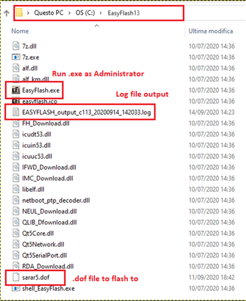
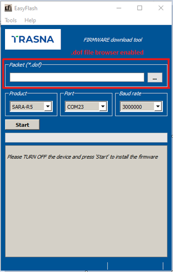
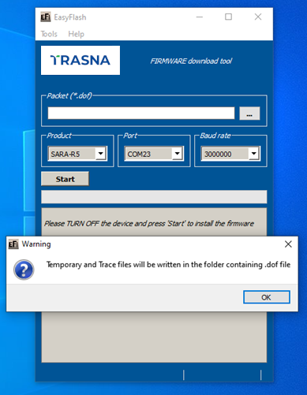
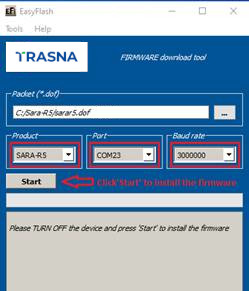
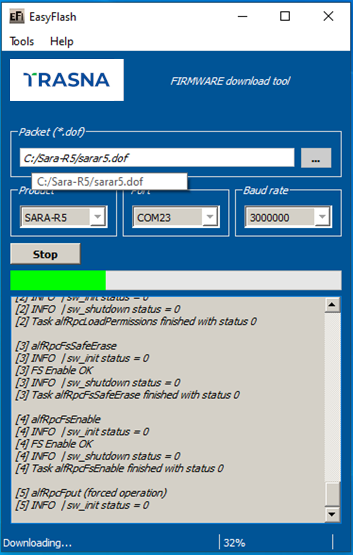
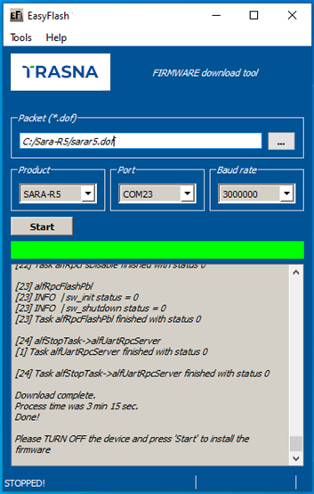
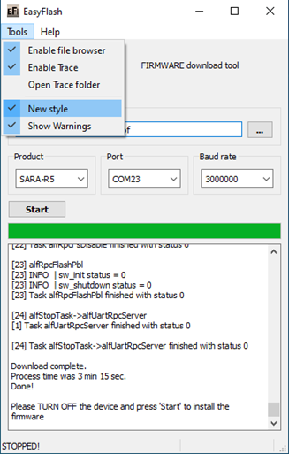
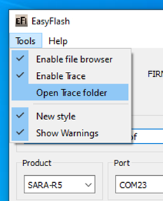
Table 1: Impact to device files and settings by EasyFlash FW update.
| Item | Impacts |
|---|---|
| "USER" tagged files stored in user file system | Erased. |
| LwM2M files stored in user file system | Erased, then set to what is configured with FW image (if any). |
| RoT FW update file (Root of Trust - The foundational security firmware component of a connected device.) |
RoT FW update file is updated. |
| MNO profiles | The MNO profile(s) configurations are erased and replaced with the ones included in the FW image. After FW update, the default MNO profile (global) default is set. |
| MNO list | Erased, then set to default values as configured in FW build image. |
| User NVM settings | Erased, then set to default values as configured in FW build image. All the configurations including APNs, eDRX, PSM, URCs, USECMNG profiles, shall be restored by Host processor. |
| User certificate and private keys | User certificate and private keys are preserved. |
| RF Calibration Data | All data are preserved |
| SMS | Erased. |
Only USB interface can be used for flashing SARA-R4 series modules.
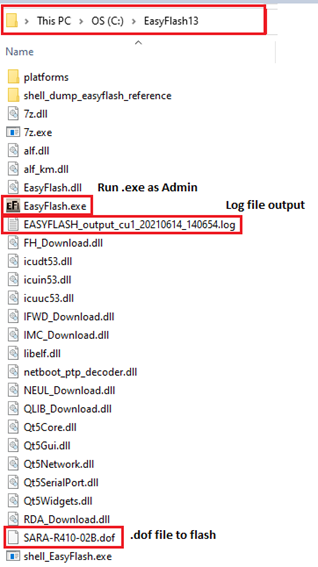
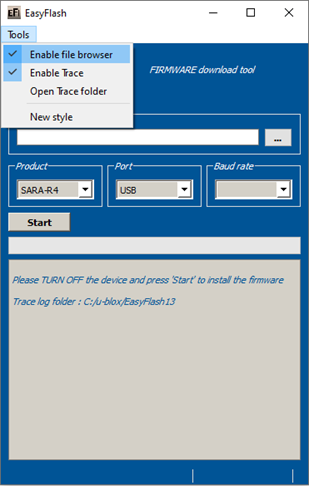
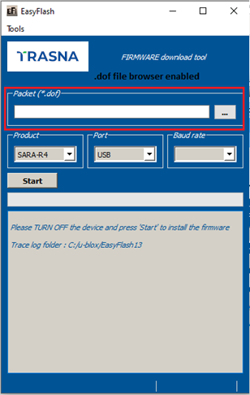
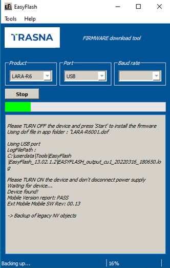
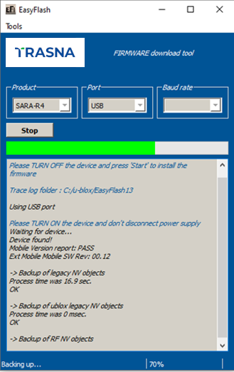
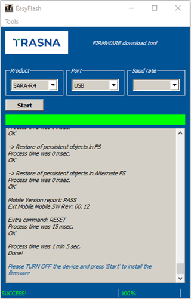
EFS / Backup & Restore feature is not supported by SARA-R4 "52" / "63" / "73" / "83" product versions or by SARA-R410M-02B-00, SARA-R410M-02B-01, SARA-R410M-02B-02, SARA-R412M-02B-00, SARA-R412M-02B-01, and SARA-R412M-02B-02.
This section describes how to use EasyFlash and update the module to a firmware with Backup & Restore feature.
After a successful firmware update using EasyFlash as indicated by the "SUCCESS!" status message, as shown in Figure 14, the module is set to trigger a backup upon the first boot. Allow the boot-up and backup time for the backup process.
If the device is left powered on after the EasyFlash process is complete it will automatically boot and perform the backup.
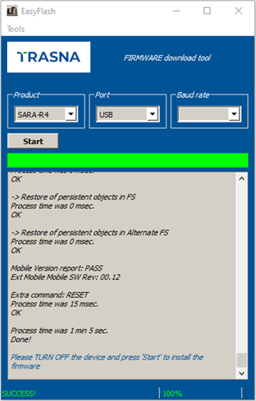
After the first backup is performed automatically post updating the firmware by EasyFlash, confirm the backup copy.
| Command | Response | Description |
|---|---|---|
| AT+UBKUPDATA? | +UBKUPDATA: 0,0,1,0,0,0,"" OK |
Backup copy confirmed as indicated by the "1" for one backup performed. |
If a firmware build with the Backup & Restore feature is being deployed onto a module by EasyFlash, after a successful FW update when the device boots up, the host is required to set preferred SMS message storage by the +CPMS AT command just once after the firmware update. This step is required if the host application uses SMS. If not, this step can be ignored. Even if the host intends to use the +CPMS AT command factory-programmed setting, the storage setting still needs to be set.
SARA-R410M/ SARA-R412M
Table 2 summarizes each of the update methods and their impact on user files and settings.
| Item | EasyFlash |
|---|---|
| Files in user file system | Erased, then set to what is configured with FW image (if any). |
| MNO profiles | Erased, then MNO profiles are loaded to only what is included in the FW image. After flashing select MNO profile with +UMNOPROF. |
| User NVM settings (i.e. +UBANDMASK) | Erased, then set to default values as configured in FW build image. |
| User certificates and private keys | User certificates and private keys are erased. |
SARA-R422 / SARA-R422S / SARA-R422M8S / SARA-R422M10S
Table 3 summarizes each of the update methods and their impact on user files and settings.
| Item | EasyFlash |
|---|---|
| Files in user file system | Erased, then set to what is configured with FW image (if any). |
| LwM2M files stored in user file system | Erased, then set to what is configured with FW image (if any). |
| RoT firmware update file | Erased, then set to what is configured with FW image (if any). |
| MNO profiles | Erased, then MNO profiles are loaded to only what is included in the FW image. After flashing select MNO profile with +UMNOPROF. |
| User NVM settings (i.e. +UBANDMASK) | Erased, then set to default values as configured in FW build image. |
| User certificates and private keys | User certificates and private keys are maintained. |
| SMS | Erased. |
Only USB interface can be used for flashing LARA-R6 and LARA-L6 series modules.
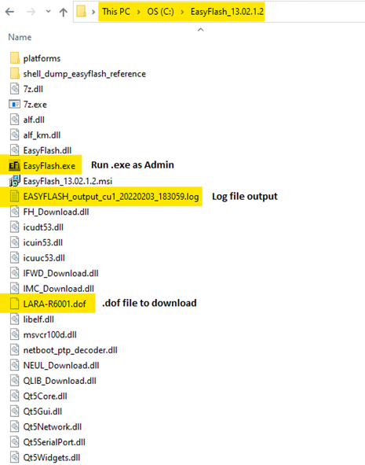
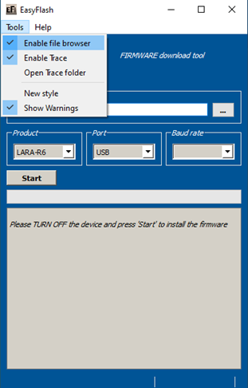
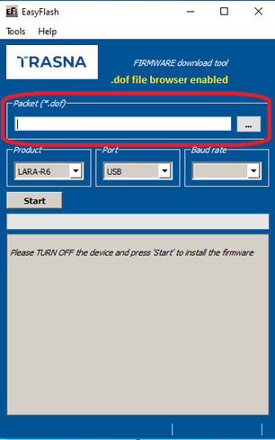
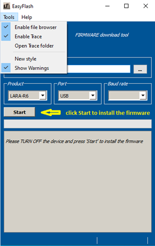
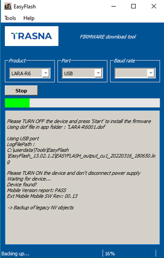
This section describes how to use EasyFlash and update the module to a firmware that offers the Backup & Restore feature.
After a successful firmware update using EasyFlash, the module is armed to trigger a backup upon the first boot. Do allow the boot-up and backup time for the backup process, as guided in Trasna LARA-R6 / LARA-L6 application development guide, TRSC-437461976-136.
If the device is left powered on after the EasyFlash process is complete, it will automatically boot and perform the backup.
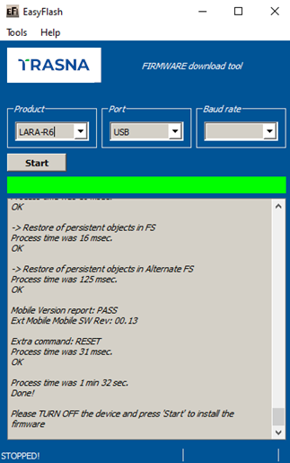
After the first backup is performed automatically post updating the firmware by means of EasyFlash, confirm the backup copy.
| Command | Response | Description |
|---|---|---|
| AT+UBKUPDATA? | +UBKUPDATA: 0,0,1,0,0,0,"" OK |
Backup copy confirmed as indicated by the "1" for one backup performed. |
If a firmware build with the Backup & Restore feature is being deployed onto a module by EasyFlash, after a successful FW update when the device boots up, then the host is required to set preferred SMS message storage by means of the +CPMS AT command just once after the firmware update. This step is required if the host application should use SMS. If it does not intend to use SMS, then this step can be ignored. Even if the host intends to use the +CPMS AT command factory-programmed setting, the storage setting still needs to be set.
These are the typical errors and their solutions:
| Error message in main log window | Description | Solution |
|---|---|---|
| "Please TURN ON the device and don't disconnect power supply Waiting for device..." This message remains, even after turned on the device |
Download does not start after power on | Check USB connection. Install Trasna USB driver. |
| "LoadFlashProg failed! (Maybe wrong dof signature?)" | Signature fails. Attempting to download a .dof file with wrong signature | Wrong .dof file. Use the correct one. |
| "Error occurred! Device IMEI is not valid! Upgrade cannot be performed" |
IMEI missing or wrong | Contact Trasna technical support |
Table 4 summarizes the update methods and their impact on user files and settings.
| Item | EasyFlash |
|---|---|
| Files in user file system | Erased, then set to what is configured with FW image (if any). |
| LwM2M files stored in user file system | Erased, then set to what is configured with FW image (if any). |
| MNO profiles | Erased, then MNO profile(s) are loaded to only what is included in the FW image. After flashing select MNO profile with +UMNOPROF. |
| User NVM settings (i.e. +UBANDMASK) | Erased, then set to default values as configured in FW build image. |
| User certificate and private keys | User certificate and private keys are preserved |
| SMS | Erased. |
Same usage as SARA-R5xxx, product name: LEXI-R5
Same usage as SARA-R5xxx, product name: LEXI-R10. UART and USB support.
Product name: LEXI-R7
Product name: SARA-R7
Product name: ADAM-R11. USB support only.
Together with GUI tool release there is also the command line tool release. GUI and CLI version release are aligned.
Help available with
Usage:
Example:
flash a SARA-R5 module with sara5.dof file via USB, save logs to C:Temp\log.log file
| OPTIONS | DESCRIPTION | EXAMPLE | |
|---|---|---|---|
| SUPPORT FILES VERSION | -t |
SHOW SUPPORT FILES VERSION | |
| PRODUCT SETTING | -p<product name> -p <product name> |
Products supported are SARA-R5, SARA-R4, LARA-R6, LARA-L6, LEXI-R5, LEXI-R10, ADAM-R11 | -pSARA-R5 for SARA-R5 type module. Default: SARA-R5 |
| COMMUNICATION SETTING | -c<COMM Port> |
Setting Communication port for download | -c6 for COM port 6, -cu1 for USB. Default: COM1 |
-b<baudrate> |
Supported 115200, 230400, 460800, 921600 and 3000000 bps. Default:921600 | ||
-f[do_flush] |
flush printf buffer (disable buffering with stdout and stderr) e.g. -f1 disable buffering. Default:0 | ||
| INPUT FILE | [-i<Path to binaryfile.dof>] [-i <Path to binaryfile.dof>] |
Use this binary file instead the one in application folder | If not used, odf file in the executable folder is used |
| USB MAP WIZARD | -culist |
Starts the USB MAP Wizard USB MAP WIZARD setup are available for the following products SARA-R4, LARA-R6, LARA-L6, LEXI-R10 |
|
| USB COMMUNICATION SET FOR MULTI CHANNEL DOWNLOAD | -cu<usb_path_name> -cu <usb_path_name> |
Use this command once got all the USB path by -culist. Run shell_EasyFlash for each USB path found |
e.g. -cu"5&112bc8d3&0&7" |
| qbackup file storage (SARA-R4,LEXI-R4,LARA-L6,LARA-R6 only) | -u<qbackup_folder_path> |
Store qbackup file (containing calibration data) in a specific folder | e.g. -uC:/Temp/Backups/ |
| DEBUG SETTINGS | -dc |
Save trace info as simple text file. Log names are preformatted: EASYFLASH_trace_cCOM_yyyymmdd_hhmmss_IMEI.log and EASYFLASH_output_cCOM_yyyymmdd_hhmmss_IMEI.log | |
-dc[trace_folder_name] -dc [trace_folder_name] |
Set path containing trace file, filename will be created automatically | shell_EasyFlash -pLARA-L6 -cu08 -dcC:/Logs/ | |
-df<trace_file_path> -df <trace_file_path> |
Set path of a custom trace file | shell_EasyFlash -pLARA-L6 -cu08 -dfC:/Logs/logfile.log | |
-w<temp_folder_name> -w <temp_folder_name> |
Set path of folder used to contain temporary files, the folder will be removed automatically after the flashing | shell_EasyFlash -pLARA-L6 -cu08 -wC:/Temp/ | |
| This will install the firmware package using COM port 3 at 460800 baud for SARA-R5 family product | shell_EasyFlash -pSARA-R5 -c3 -b460800 | ||
| This will list every Diagnostic or EDL port found for the selected family product Please take note of the number after '@'. This is the input for the multi USB channel download |
shell_EasyFlash -pLARA-L6 -culist | ||